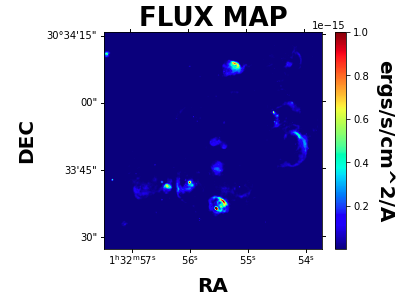

Basic Example Lite¶
This example is the much condensed version of our basic example for those of us already familiar with the parameters and how LUCI works. Let’s get started!
Let’s start with importing LUCI. Just as descsribed on the readthedocs page, we need to point our system path to our install location of the LUCI folder. We will additionally import the Luci plotting functions :)
You can find the data used in this tutorial at the CADC database ([http://www.cadc-ccda.hia-iha.nrc-cnrc.gc.ca/en/search](http://www.cadc-ccda.hia-iha.nrc-cnrc.gc.ca/en/search)) searching for M33_FIELD7 SN3 (product id: 2309128p).
# Imports
import sys
sys.path.insert(0, '/media/carterrhea/carterrhea/SIGNALS/LUCI/') # Location of Luci
from LuciBase import Luci
import LUCI.LuciPlotting as lplt
We now will set the required parameters. We are also going to be using our machine learning algorithm to get the initial guesses.
#Set Parameters
# Using Machine Learning Algorithm for Initial Guess
Luci_path = '/media/carterrhea/carterrhea/SIGNALS/LUCI/'
cube_dir = '/media/carterrhea/carterrhea/M33' # Path to data cube
cube_name = 'M33_Field7_SN3.merged.cm1.1.0' # don't add .hdf5 extension
object_name = 'M33_Field7'
redshift = -0.0006 # Redshift of M33
resolution = 5000
We intialize our LUCI object
# Create Luci object
cube = Luci(Luci_path, cube_dir+'/'+cube_name, cube_dir, object_name, redshift, resolution)
The output will look something like this:

Let’s quickly create a deep frame
# Create Deep Image
cube.create_deep_image()
Let’s extract a background region and take a look at it. The background region is defined in a ds9 region file called bkg.reg.
bkg_axis, bkg_sky = cube.extract_spectrum_region(cube_dir+'/bkg.reg', mean=True) # We use mean=True to take the mean of the emission in the region instead of the sum
We now fit part of our cube defined by the bounding box 500<x<1100 and 700<y<1300 with a Gaussian on the Halpha line, the NII-doublet, and the SII-doublet with a binning of 2. We are also going to constrain our velocities and sigmas. Furthermore, we will calculate uncertainties using the Hessian method.
# Fit!
vel_map, broad_map, flux_map, chi2_fits = cube.fit_cube(['Halpha', 'NII6548', 'NII6583', 'SII6716', 'SII6731'], 'gaussian', [1,1,1,1,1], [1,1,1,1,1], 500, 1100, 700, 1300, bkg=bkg_sky, binning=2, uncertainty_bool=True)
The output should look something like this:

Let’s take a look at the velocity map. We can play with the colorbar limits with the clims argument.
lplt.plot_map(flux_map[:,:,0], 'flux', cube_dir, cube.header, clims=[1e-19, 1e-15])
And let’s see what this looks like!
The resulting data maps will be placed in a folder called luci. Inside there, you will find additional folders containing the Flux, Amplitude, Velocity, and Broadening maps for each line and their uncertainties.